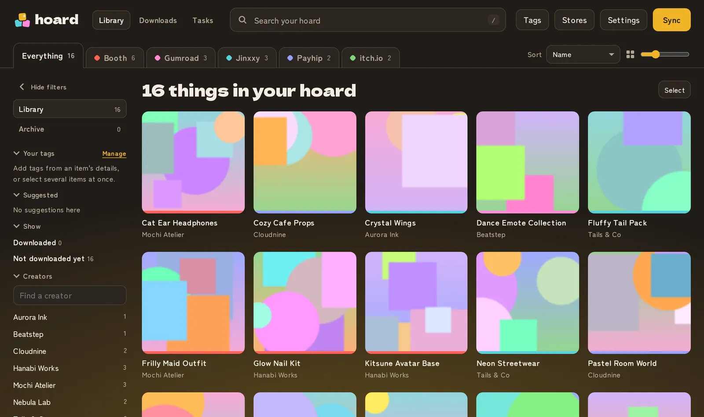
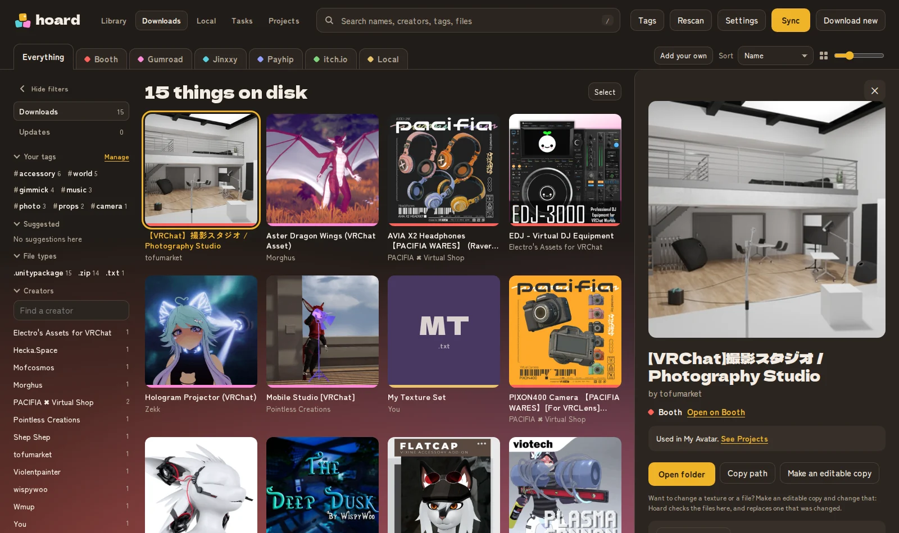
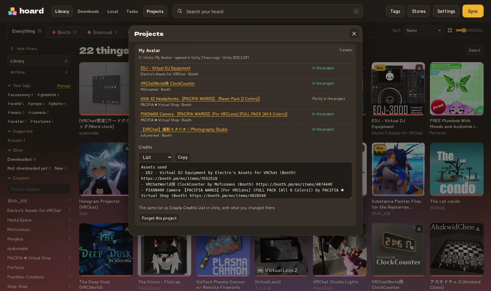
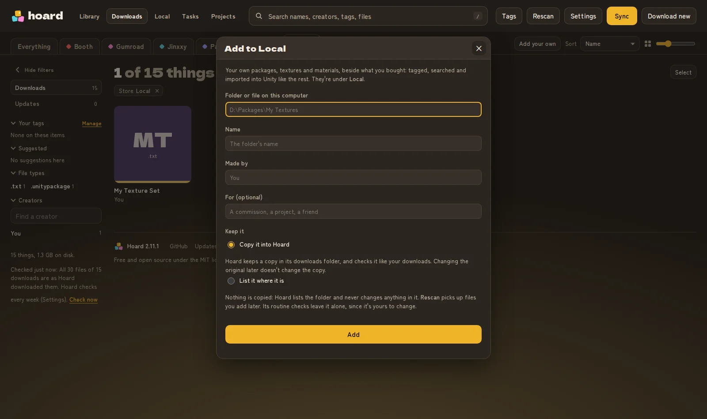
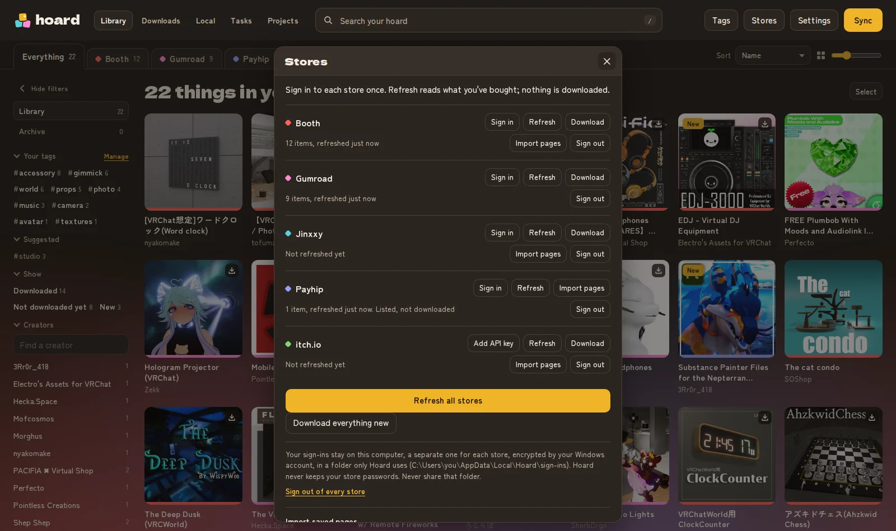

One library
Everything you own from five stores, together. Search it, sort it, filter by store, creator, tag or file type, and see what's new since you last looked.
Hoard lists everything you've bought on Booth, Gumroad, Jinxxy, Payhip and itch.io, downloads it, and keeps your copies up to date when creators update them. Free, open source, and it runs only on your computer.
For Windows, macOS and Linux.

Real products from the maintainer's own library, shown with their creators' pictures (credits). Yours shows what you've bought.
Everything you own from five stores, together. Search it, sort it, filter by store, creator, tag or file type, and see what's new since you last looked.
Sync reads each store and downloads anything new, with progress, speed and time left. Stop is safe: a file part way through carries on from where it was next time.
When a creator updates something you've downloaded, Hoard tells you, and fetches only the new files.
Tag your assets your way, archive what you're done with, and keep a hidden library behind a PIN.
Sign in to each store once, on its own page, with your password, a passkey, or Google, Discord or X. Hoard never sees your password.
No account, no server, no tracking. Your sign-ins are encrypted with your computer's own keyring, and everything stays in your folders.




Products shown are from the maintainer's own library, with their creators' pictures: see who made each one, and where to get it. Thank you for making them.
Everything you've downloaded, inside the Unity editor: Window › Hoard. Search your library with pictures (animated ones play), see which assets are already in this project, and import one without downloading it again.
Create Credits List lists the creators of every asset fully in your project, ready to paste into your avatar's description. Hoard's Projects shows each project's assets too.
Editor only: nothing from it goes into your uploads. Unity 2022.3, the version VRChat uses.
From the latest release on GitHub.
Windows 10 or 11. Installs for you only, with no administrator prompt, and updates itself.
Download the installerCode-signed. Windows may still say it "protected your PC" while Hoard earns Microsoft's trust: choose More info (the publisher shows as Hoard's maintainer), then Run anyway.
macOS 11 or newer. A package for your Mac's chip; Hoard goes in Applications.
Apple Silicon (M1 and newer) IntelIt isn't signed by Apple yet: open it, choose Done, then System Settings › Privacy & Security › Open Anyway.
A Flatpak for x86_64. Open it with your software centre, or flatpak install --user it.
Uses the GNOME runtime from Flathub.
Every file is built on GitHub from this project's code, with a signed record of how, and checked by VirusTotal before it's published. How to install, update and check a download. Or run it from source with Python.